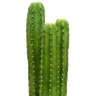

Plant Grimoire

San Pedro Cactus⚠️ EXTREME CAUTION: San Pedro contains the potent psychotropic alkaloid mescaline and is illegal in most jurisdictions. This plant is not for recreational use and should never be used without expert traditional supervision. This entry is for historical and educational purposes only.
Overview
San Pedro is a ribbed night-blooming cactus also known as achuma, huachuma, and giganton. It grows from sea level up to altitudes of 3000 meters in South America from Ecuador to Bolivia.
San Pedro is Spanish for St Peter, the saint who holds the keys to the kingdom. This name reflects the plant's role as a spiritual key, opening portals to the spirit world and sacred realms of consciousness.
Contains Mescaline
San Pedro contains the potent alkaloid mescaline. It possesses a psychotropic, consciousness-altering effect and has historically been used to enter or view the spirit world.
Curanderos and Shamanic Diagnosis
It is used as a diagnostic tool for curanderos (Latin American shamanic healers) to enable the diagnosis of illness and determination of the needed cure.
Under the influence of San Pedro the shaman may:
- Battle ferocious animals
- Communicate with spirits
- Travel between realms
This shamanic work requires not only botanical knowledge but deep spiritual training and protection protocols.
Ancient Use: One to Three Thousand Years
Based on representations on pre-Columbian pottery, San Pedro has probably been used for at least one thousand years and possibly for three thousand years or even longer.
The archaeological record demonstrates that San Pedro was integral to pre-Columbian spiritual and healing practices long before European contact.
Spanish Inquisition and Witch Persecution
The first written descriptions appeared shortly after the arrival of the Spanish within the context of the Inquisition.
Seventeenth-century priests wished to eliminate Pagan practices of which San Pedro was seen as being integral. To persist in San Pedro's use was to defy the new order and the new religion and thus to be branded as a witch.
Witch's Tool
Because San Pedro is not administered without strict rituals and expert supervision, it was understood as a witch's tool. Eliminating the plant eliminates the presiding practitioner's role, stripping her of function and respect.
This persecution followed the familiar colonial pattern: by criminalizing sacred plants, authorities could dismantle indigenous spiritual leadership and traditional healing systems.
Survival and Modern Study
Its use was never eradicated however. Social scientists, ethnobotanists, and chemists now find San Pedro fascinating and it has been intensely studied for over 50 years.
It is still used by Peruvian curanderos. The tradition persists despite centuries of colonial suppression, maintained by practitioners who have preserved ancient knowledge.
Complex Psychotropic Infusions
It is most frequently administered as part of a psychotropic infusion, meaning that there may be a lot of other stuff in the brew, too.
These are sophisticated rituals that require both spiritual knowledge and botanical expertise; San Pedro is not a toy for laypeople to play with.
Both benevolent and malevolently oriented practitioners create these potions, although obviously with different motivation. This dual potential underscores the importance of seeking only properly trained, ethically grounded practitioners.
Ritual Preparation and Consumption
Infusions are ingested as a component of spiritual and magical ritual. In other words, consumption of the beverage isn't believed sufficient. It's only part of a process, broken down into steps that must be completed properly.
The Complete Ritual Process
- Plants must be gathered and prepared ritually
- The brew is ritually prepared, too, with spiritual ritual incorporated at every stage
- Consumption occurs within supervised ritual context
- The ritual leader opens and closes portals as needed
This is not a mechanical process. Rituals are required to enable the spirit of San Pedro to interact with human spirits.
Similar to Ayahuasca and Peyote Traditions
This is reminiscent of other indigenous American rituals featuring ayahuasca and peyote, leading one to wonder whether once upon a time there weren't similar rituals, similar complex brews for Amanita muscaria or henbane.
The parallel structures across indigenous American plant medicine traditions suggest ancient, sophisticated understandings of consciousness, spirituality, and the proper protocols for working with sacred plants.
Portal Vulnerability and Magical Attack
San Pedro is also consumed within supervised ritual. It is traditionally believed that if the consumer is not prepared by the ritual leader (curandera, shaman, witch) who opens and closes portals as needed, then the person under the influence of San Pedro is left vulnerable to magical attack.
Because these are not one-way portals…
The portals opened by San Pedro allow bidirectional movement. Without proper protection and guidance, the practitioner risks not only failing to achieve the intended spiritual work but also becoming vulnerable to malevolent forces or entities that may enter through these open doorways.
This is why traditional use always occurs under the supervision of an experienced ritual leader who knows how to properly open, monitor, and close these spiritual passages.